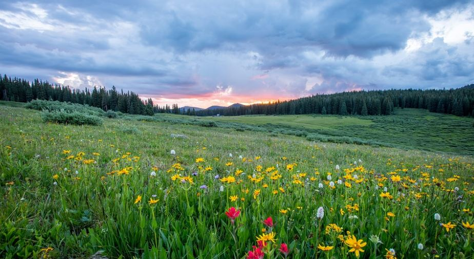
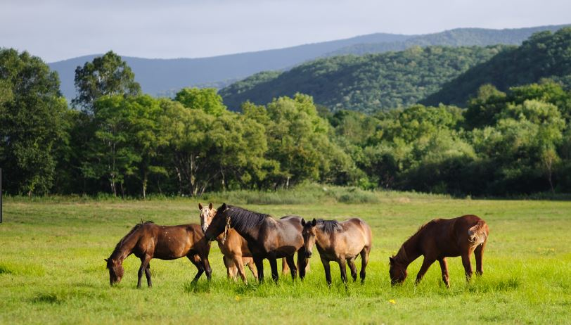

Pradera

Características
La pradera es un bioma que según los científicos, se encuentra entre el clima desértico y el boscoso, pues las lluvias no son tan cotidianas pero sí existe mayor vegetación y fauna.
Ubicación geográfica
Podemos encontrar praderas en varios continentes como en América del Norte y del Sur abarcando Argentina, así como en África del Sur, Eurasia Central y Australia.
Clima
El clima es húmedo, semiárido, con veranos cálidos de alrededor de 21°C e inviernos fríos.
Realmente existen dos estaciones reales: la de crecimiento y la de latencia. En la primera es cuando no hay heladas y la vegetación puede crecer, a diferencia del período latente en el cual no crece ningún tipo de vegetación ya que es extremadamente frío.
Flora
En las praderas ubicadas en el hemisferio sur, la vegetación es más densa ya que tienen más precipitaciones que las del norte.
La gramínea, el juncal, girasol, trébol, índigos silvestres, entre otros. Algunos tipos de gramíneas son altamente tóxicas para los animales herbívoros que habitan en este bioma.
Debido al pastoreo y ramoneo de los animales herbívoros, así como por los incendios y la poca precipitación pluvial, los árboles no se dan en este bioma. Por el contrario, el hombre ha adaptado las zonas amplias y extensas de pradera para producir trigo, maíz, avena y otros granos esenciales para el consumo humano.
Fauna
La fauna varía de acuerdo a la región geográfica donde se encuentre la pradera, pero los animales que podemos encontrar son armadillos, comadrejas, zorros, patos, lechuzas, colibrís, entre otros, siendo hasta 80 especies animales y 300 especies de aves las que forman parte de estas regiones.
Estas aves que se alimentan del suelo están expuestas a la depredación, pero debido a que son crípticas, es decir, pueden pasar desapercibidas para los sentidos de otros animales, no corren mucho peligro.
Gracias a que mucha fauna de la pradera se dedica a excavar, la tierra activa sus minerales y permite la producción de vegetación. Las lombrices y bacterias además de oxigenar el suelo, también ayudan a la descomposición de la materia orgánica que servirá como abono para fertilizar.
Paisaje de la Pradera
Las praderas nos ofrecen un amplio y muy extenso paisaje lleno de vegetación baja y algunas de ellas van acompañadas de cadenas montañosas.
Actualmente, existen muy pocas praderas naturales en América del Norte, ya que la mano del hombre ha encontrado un beneficio para la agricultura de los granos antes mencionados. Sin embargo, aún podemos encontrar estos bellos paisajes en estado natural y libre de cualquier contacto invasor.

ATRAS